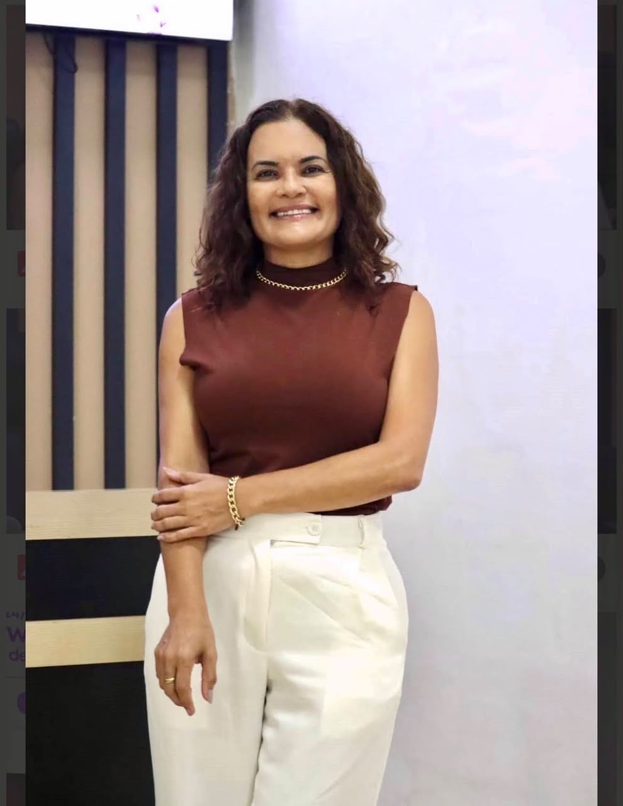
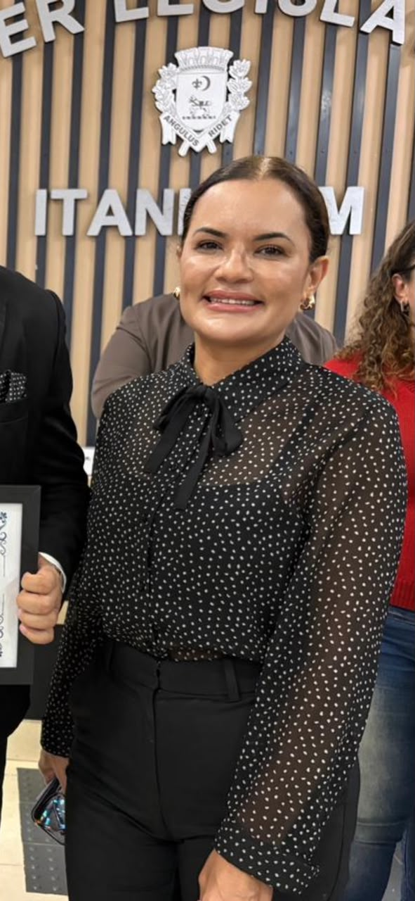
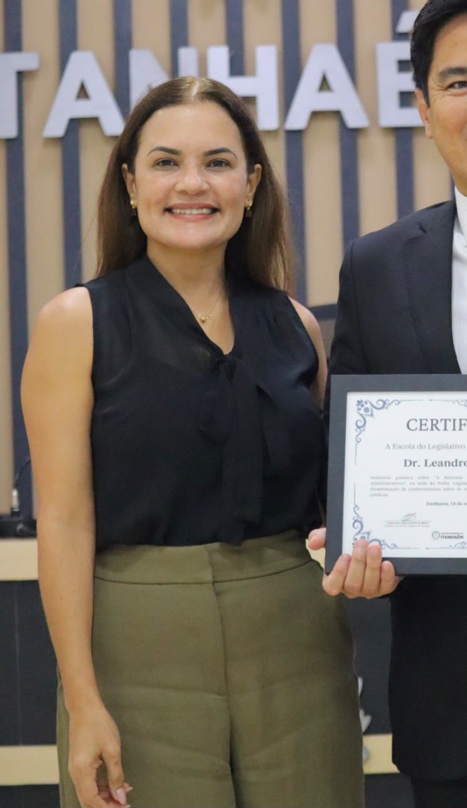

MárciaMuniz
Inteligência Jurídica para a gestão municipal.

Direito Administrativo
Profissional com mais de 20 anos de experiência no serviço público municipal e atuação consolidada no Poder Legislativo de Itanhaém.
Graduada em Administração de Empresas e Direito, com especializações em Direito Negocial Imobiliário, Direito Previdenciário e Direito Municipal, além de formação em andamento em Controladoria Pública. Aprovada no Exame da Ordem dos Advogados do Brasil (OAB) em 2018, com escolha de Direito Administrativo para a segunda fase.
Sua experiência concentra-se em:
Ingressou na Câmara Municipal de Itanhaém em 2004, por concurso público, e exerce funções de direção desde 2009. Atualmente, atua como Diretora Parlamentar, Coordenadora da Escola do Legislativo de Itanhaém, Presidente da Comissão de Cerimonial e Agente de Contratação.
Coordenação parlamentar e processo legislativo municipal;
Organização de sessões, proposições, comissões e audiências públicas;
Contratações públicas e contratações diretas, conforme a Lei Federal nº 14.133/2021;
Educação legislativa e participação social;
Cerimonial e eventos institucionais;
Articulação intersetorial e implementação de soluções institucionais.
Entre os principais resultados de sua atuação, destacam-se a efetiva implantação da Procuradoria Especial da Mulher de Itanhaém, em 2023, e a contribuição para a retomada dos procedimentos de composição do Conselho Municipal dos Direitos das Mulheres, a partir de 2025.
Síntese profissional
experiência jurídica, administrativa e legislativa aplicada à organização, ao aprimoramento e ao fortalecimento das instituições públicas.
Competências-Chave
Processo legislativo municipal;
Coordenação de atividades parlamentares;
Organização de sessões e audiências públicas;
Tramitação de proposições e controle de prazos;
Apoio técnico à Mesa Diretora, aos vereadores e às comissões;
Contratações públicas e contratações diretas;
Aplicação da Lei Federal nº 14.133/2021;
Educação legislativa;
Cerimonial e eventos institucionais;
Gestão de processos e documentos;
Pesquisa e análise institucional;
Articulação entre setores e agentes públicos;
Fortalecimento da participação social;
Administração Pública municipal.
Câmara Municipal de Itanhaém
2004–atualIngresso por concurso público e trajetória dedicada à coordenação, à organização e ao acompanhamento das atividades do Poder Legislativo Municipal.
Desde 2009, exerce funções de direção, com atuação em processos parlamentares, procedimentos regimentais, gestão institucional e suporte técnico-operacional às atividades legislativas.
Funções atuais
- Diretora Parlamentar;
- Coordenadora da Escola do Legislativo de Itanhaém;
- Presidente da Comissão de Cerimonial;
- Agente de Contratação, com atuação no gerenciamento de contratações diretas.

Principais responsabilidades
Coordenar atividades parlamentares e trabalhos legislativos;
Acompanhar a tramitação de proposições e o cumprimento de prazos regimentais;
Prestar suporte à Mesa Diretora, aos vereadores e às comissões;
Organizar sessões, audiências públicas, solenidades e demais eventos institucionais;
Apoiar os procedimentos de instalação de legislaturas, posse de agentes políticos e eleição da Mesa Diretora;
Gerenciar etapas e documentos relacionados às contratações diretas;
Articular setores e agentes públicos na condução de demandas institucionais.
Ordem dos Advogados do Brasil — OAB
Atuação profissional em ambiente jurídico e institucional, anterior ao ingresso no serviço público municipal.
Processo Legislativo Municipal
Atuação na organização e no acompanhamento dos procedimentos parlamentares, com observância da legislação aplicável, do Regimento Interno e dos prazos institucionais.
Principais atividades
- Organização de sessões ordinárias e extraordinárias;
- Acompanhamento de proposições legislativas;
- Controle de prazos e procedimentos regimentais;
- Suporte à Mesa Diretora, aos vereadores e às comissões;
- Organização de audiências públicas;
- Acompanhamento de publicações e atos parlamentares;
- Apoio à instalação de legislaturas, à posse de agentes políticos e à eleição da Mesa Diretora.
Contratações Públicas
Atuação como Agente de Contratação desde 2005, com experiência nos procedimentos de contratação da Câmara Municipal de Itanhaém.
Atualmente, a atuação está concentrada no gerenciamento de contratações diretas, conforme a Lei Federal nº 14.133/2021, incluindo:
- Acompanhamento das etapas processuais;
- Organização documental;
- Verificação dos requisitos legais;
- Controle dos procedimentos;
- Apoio à condução das contratações;
- Observância dos princípios da legalidade, do planejamento, da eficiência e da transparência.
Educação Legislativa
Como Coordenadora da Escola do Legislativo de Itanhaém, participa de ações voltadas à disseminação de conhecimentos sobre o Poder Legislativo, ao fortalecimento da cidadania e à aproximação entre a instituição e a sociedade.
Cerimonial e Eventos Institucionais
Na Presidência da Comissão de Cerimonial, atua no planejamento e na execução de solenidades e eventos oficiais, incluindo:
Implantação da Procuradoria Especial da Mulher de Itanhaém
- 2023
Em 2023, apresentou à Presidência da Câmara a iniciativa que resultou na efetiva implantação da Procuradoria Especial da Mulher, prevista anteriormente na Resolução nº 460/2012.
- 2023 — 2025
Entre 2023 e 2025, participou da condução dos trabalhos de estruturação e organização da Procuradoria, contribuindo para:
- Implementação efetiva da estrutura institucional;
- Organização dos procedimentos de funcionamento;
- Fortalecimento da representação feminina;
- Criação de espaço institucional de acolhimento e defesa de direitos;
- Ampliação dos mecanismos de participação e proteção das mulheres.
Retomada do Conselho Municipal dos Direitos das Mulheres
- 2024
Em 2024, identificou, por meio de pesquisas e análise institucional, a necessidade de retomada dos procedimentos de composição do Conselho Municipal dos Direitos das Mulheres, esvaziado desde 2019.
- 2025
A partir dessa identificação, contribuiu para a articulação das providências necessárias. Como resultado, foram retomados, a partir de 2025, os processos de eleição e preenchimento das vagas destinadas às conselheiras.
Essa atuação evidencia competências em:
- Diagnóstico de demandas institucionais;
- Pesquisa e análise de informações;
- Articulação entre setores e agentes públicos;
- Proposição de encaminhamentos;
- Implementação de soluções;
- Fortalecimento da participação social.
Formação Acadêmica
Graduação em Administração de Empresas — FAITA
Formação em gestão, planejamento, organização de processos e administração institucional.
Graduação em Direito — Faculdade Peruíbe
Trabalho de Conclusão de Curso: “O vício de iniciativa no processo legislativo municipal”.
Exame da Ordem dos Advogados do Brasil — OAB
Aprovação em 2018, com escolha de Direito Administrativo para a segunda fase.
Pós-graduações
- Direito Negocial Imobiliário — Escola Brasileira de Direito (EBRADI);
- Direito Previdenciário — Pro Ordem;
- Direito Municipal — Gransul;
- Controladoria Pública — Gransul, em andamento.
Diferenciais Profissionais
Experiência no Poder Legislativo
Mais de duas décadas de atuação no serviço público municipal, com exercício de funções de direção desde 2009.
Formação multidisciplinar
Integração entre Administração de Empresas, Direito e especializações voltadas à gestão e à Administração Pública.
Domínio técnico e operacional
Conhecimento aplicado de processos legislativos, procedimentos regimentais, contratações públicas e organização institucional.
Visão sistêmica
Capacidade de analisar demandas sob perspectivas jurídicas, administrativas, operacionais e institucionais.
Capacidade de articulação
Experiência no relacionamento entre setores, autoridades, agentes públicos e estruturas administrativas.
Iniciativa e implementação
Atuação direta na implantação da Procuradoria Especial da Mulher e na retomada dos procedimentos de composição do Conselho Municipal dos Direitos das Mulheres.
Organização e responsabilidade técnica
Atuação orientada pelo planejamento, pelo controle de procedimentos, pela legalidade, pela transparência e pela eficiência.

Minha atuação é orientada pela combinação entre conhecimento técnico, experiência prática, responsabilidade institucional e respeito às normas que regem a Administração Pública.
Ao longo da carreira, contribuí para a organização dos trabalhos legislativos, a condução de procedimentos administrativos, o fortalecimento da educação legislativa e a implementação de estruturas voltadas à participação social e à defesa de direitos.
Sigo comprometida com:
- Aperfeiçoamento profissional;
- Eficiência e organização dos processos;
- Legalidade e transparência;
- Fortalecimento das instituições públicas;
- Participação social;
- Desenvolvimento da Administração Pública.
Síntese da Trajetória
- Mais de 20 anos de experiência no serviço público municipal;
- Ingresso por concurso público na Câmara Municipal de Itanhaém;
- Exercício de funções de direção desde 2009;
- Atuação como Diretora Parlamentar;
- Coordenação da Escola do Legislativo de Itanhaém;
- Presidência da Comissão de Cerimonial;
- Atuação como Agente de Contratação desde 2005;
- Formação em Administração de Empresas e Direito;
- Especializações em áreas jurídicas e administrativas;
- Aprovação no Exame da OAB;
- Participação na implantação da Procuradoria Especial da Mulher de Itanhaém;
- Contribuição para a retomada do Conselho Municipal dos Direitos das Mulheres.